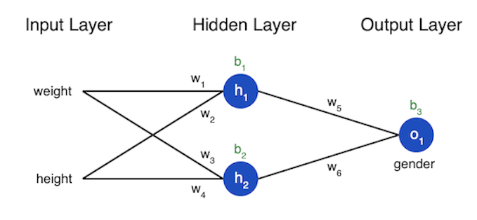

This JavaScript implementation of a neural network is based on the Python example published by Victor Zhou on March 3, 2019. The following is a summary of Victor's introductory explanation of neural networks and how to program them.
The building blocks of a neural network are "neurons", essentially a black box with inputs and outputs. In this introduction all neurons will have 2 inputs and one output. Within the neuron the inputs are multiplied by weighting factors, then the weighted inputs are added together with a bias.
Finally the sum is passed through an activation function:
The activation is used to turn unbounded input into a more predictable form. A commonly used activation function is the sigma function. Using the sigma function turns numbers in the range to . The sigmoid function is This process of passing inputs forward to produce an output is called feedforward.
A neural network is simply a number of neurons connected together into layers. The network we will model programmatically has three layers, an input layer with two inputs, a hidden layer with two neurons, and an output layer. The inputs for the output layer are the outputs from the neurons in the hidden layer. A more complex neural network would have more hidden layers and more neurons in each layer.
So this network we are building will have 2 inputs, . Each of these will serve as input for both neurons in our hidden layer, . There is one neuron, o1 for our output layer. So we have four weightings from input to hidden layer and two weightings from hidden to output.
The example from Victor is using weight and height data to predict a person's gender. So given data from two women and two men can we build a model that will predict gender from new weight and height data. The following table shows the data we will use.
| Name | Weight (lb) | Height (in) | Gender |
|---|---|---|---|
| Alice | 133 | 65 | F |
| Bob | 160 | 72 | M |
| Charlie | 152 | 70 | M |
| Diana | 120 | 60 | F |
It is often common to shift the data and normally this is done by the mean. So subtracting the mean weight, 141.25, from the weights and the mean height, 66.75, gives the following revised table.
| Name | Weight (lb) | Height (in) | Gender |
|---|---|---|---|
| Alice | -8.25 | 1.75 | F |
| Bob | 18.75 | 5.25 | M |
| Charlie | 10.75 | 3.25 | M |
| Diana | -21.25 | -6.75 | F |
Training requires a measure of how "good" the predictions are, so we can track this measure and seek improvement. This is called the loss. Here the mean squared error (MSE) loss.
Where n is the sample number, y is the variable being predicted (gender), y-true is the value of the correct variable (1), and y-pred is the predicted value of y from the network. Thus we are seeking the average over all of the squared errors. The better the prediction the lower the loss. To train a network you adjust the weighting factors and biases to minimize the loss.
If we label the six weights and three biases per the diagram above, the we can write the loss as a multivariable function:
The partial derivative of L with respect to w1 can tell us how the loss will change as w1 changes. Remember we defined L as the loss above.
Because so . We also know that where f is the sigmoid function.
Since w1 only affects h1 (not h2), we can write
We can follow the same reasoning for :
The derivative of the sigmoid function, f ', is:
So if we have a dataset that only consists of Alice (wt = -8.25, ht = -1.75, gender = 1) and set all of the weightings to 1 and the biases to 0, we can feed this through the network...
So y-pred is 0.500, which means neither male nor female is favored as expected. Using the formulas above one can calculate , probably a very small number but I will leave that as an exercise as I am tired of writing MathML.
The next thing to consider is the optimization algorithm used to modify the variables and minimize loss. The algorithm implemented here is stochastic gradient descent or SGD. One basically subtracts multiplied by a constant, η, from w1 to get a new w1. η is called the learning rate as it controls how much we modify w1.
The process works as follows:
At this point the learning continues for 1000 cycles based on the data in the table above. The program then predicts the gender of the following two individuals: Emily (-7,3) and Frank (20,2). The predictions are listed in the two fields below. A graph is also constructed that shows how the loss improves through the 1000 training iterations.
See Neural Network Playground for a real neural network.